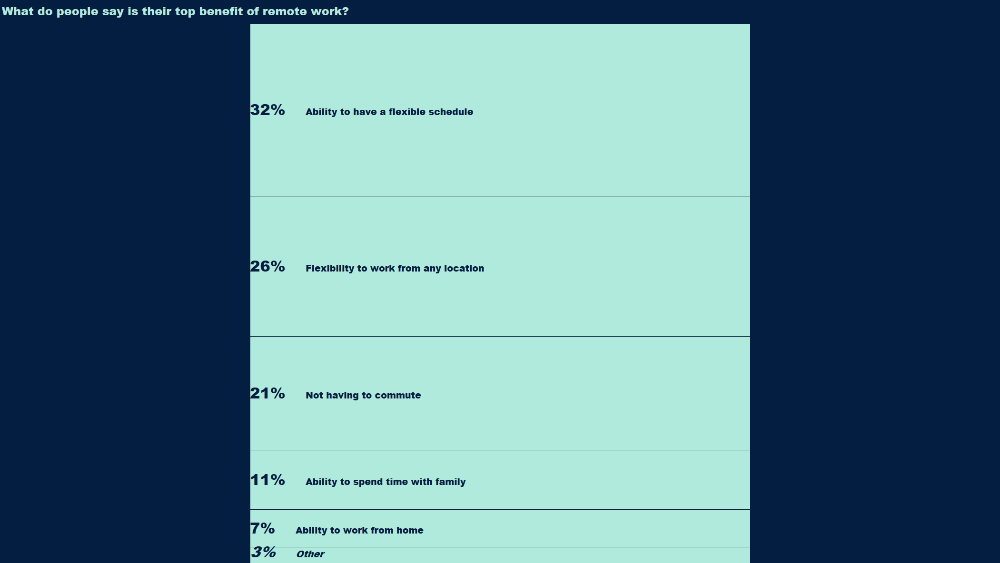

The coronavirus pandemic has quickly made remote work a new reality for many, and this week's #MakeoverMonday looks at what the top-ranked benefits of remote work are.
This week's data requires essentially no preparation or cleaning; it's just the aggregated results of a survey question.
I joked on Twitter:They say 80% of a data scientist's time is spent on data prep. That is not the case for this week's#MakeoverMonday. 😁 pic.twitter.com/XtBZ057Ka7
— Ben (@bbgatch) August 10, 2020
Because the data is simple, I wanted to focus more on using graphic elements that I don't typically use like shaded backgrounds and bold colors and graphics. Thanks to designwizard.com for the inspiration on what colors to try out.
The original #MakeoverMonday visualization is a stacked bar chart, and initially I followed the same approach:
One thing that these #MakeoverMonday exercises have allowed me to focus on is how vizzes perform on different screens. I want to make sure that the viz is easily viewable from a phone or tablet.
The stacked bar chart had three issues:
To keep things easily visible on mobile devices I switched to a regular horizontal bar chart. The label text wraps nicely and the viz adjusts well to different screen sizes.
The benefit of the stacked bar chart is that it quickly conveys our results are percentages out of 100%. The user could quickly comprehend that the top two choices represent over half of the responses, for example.
I'm ok to lose that benefit in this case. The horizontal bar chart still clearly conveys the top responses to the question, and my main goal is to create a bold, striking visual.